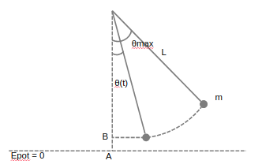

Physique Oscillation Harmonique¶
| Author: | Vanden Driessche Théo |
||
|---|---|---|---|
| Date: | November 2017
|
Contents:
Phènomènes périodiques¶
Définitions¶
Mouvements Harmoniques¶
Définition¶
Amplitude¶
Étude mathématique¶
\[\omega = \dfrac{\alpha}{t} \text{ ou } \alpha=\omega \cdot t\]
Dynamique¶
Rappel: Loi d’Hooke¶
Toute force de ce type provoque un mouvement d’oscillation harmonique par consequent: la période peut être déduite de la relation
Le pendule simple¶
Epot¶
Ecin¶
Etot¶
\[(E_{tot})'=0\]
\[\begin{split}(E_{pot})' & = (E_{cin} + E_{pot})' \\ 0 & = \Bigg( \dfrac{m(\theta_{(t)}' L)^2}{2} + mgL\Big(1-cos(\theta_{(t)})\Big)\Bigg)' \\ & = \Bigg( \dfrac{m(\theta_{(t)})'^2 L^2}{2} + mgL\Big(1-cos(\theta_{(t)})\Big)\Bigg)' \\ & = \dfrac{2}{2}mL^2 \theta_{(t)} ' \theta_{(t)}'' + mgLsin(\theta_{(t)})\theta_{(t)}' \\ & = L \theta_{(t)}'' + y\cdot sin(\theta_{(t)}) \\ \theta_{(t)}'' & =\dfrac{ -y\cdot sin(\theta_{(t)})}{L}\end{split}\]
\[\theta_{(t)} = \theta_{max} sin(\omega t + \varphi)\]
\[\begin{split}\omega^2 & = \dfrac{g}{L} & \omega = \sqrt{\dfrac{g}{L}}& &\dfrac{2\pi}{T} = \sqrt{\dfrac{g}{L}}\\ T & = \dfrac{2\pi \sqrt{\dfrac{g}{L}}L}{2} & T = 2\pi \sqrt{\dfrac{L}{g}} &\end{split}\]
Energie¶
Énergie cinétique¶
Énergie totale¶
\[\begin{split}\begin{split} E_{tot} & = E_{cinMax}\\ & = \frac{kA^2}{2} \end{split}\end{split}\]
Énergie potentielle élastique¶
\[\begin{split}\begin{split} E_{pot} & = E_{tot}-E_{cin} \\ & = \frac{kA^2}{2} - \dfrac{k(A^2-y_{(t)}^2)}{2} \\ & = \frac{k(A^2-A^2+y_{(t)}^2)}{2} \\ & = \frac{ky_{(t)}^2}{2} \end{split}\end{split}\]
Oscillations amorties¶
Résonance¶
Définitions¶
- lorsque le transfet d’énergie est maximum, on dit qu’il y a résonance.
Conclusions¶
- Il y a résonance lorsque la fréquence propre du résonateur est égale à la fréquence propre de l’excitateur
- Le transfert d’énergie a donc un caractère sélectif: le résonateur absorbe de façon préférentielle à sa fréquence propre.
Application mathématique¶
Ondes progressives¶
Définition¶
Transfert d’énérgie sans transfert de matère.
Types¶
- Ondes transversales
- Ondes longitudinales
Vitesse¶
Dépend du milieu et de la nature du signal
Ondes sinusoïdales entretenues¶
Longueur d’onde¶
Distance minimale entre 2 points en concordance de phase.
Études mathématiques¶
Prenons l’équation en fonction du temps de l’élongation de S (la source) et supposons que \(\varphi = 0\)
P fait la même chose que S avec avec un retard qui correspond au temps mis pour arriver à P.
Conditions pour que P et S vibrent en concodrance de phase.
Conditions pour que S et P soient en oppositions de phase.
Vitesses des ondes progressives le long d’une corde¶
Dans un référentiel qui se déplace avec l’onde, c’est la corde qui se déplace vers la gauche.
Un petit segment de corde \(\Delta S\) peut être assimilé à un arc de cercle.
Si \(\mu\) est la densité de masse linéique (la masse par mètre (kg/m)), la masse du segment est:
La tension de la corde doit fournir la force centripète nécessaire au mouvement circulaire.
Si l’amplitude de la déformation est petite, :math:’sin(theta)cong theta’ , alors,